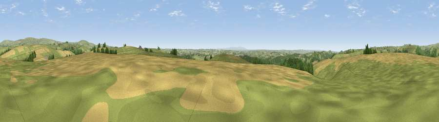

Viewpoint near Stags Head
#8872 in England · top 16% of its area beats it · near Stags HeadWhere it is
The exact computed spot (SS 69875 29425). Click the marker for map links.
The view, rendered

A 360° render of this exact spot computed from the terrain model, tree cover and land cover — summer colours, afternoon light, calibrated against photographs of famous viewpoints. Real trees, hedges and buildings will differ in detail.
The panorama
Grey silhouette: terrain skyline in each direction (720 bearings, Earth curvature and refraction included). Dashed green: skyline with trees (+15 m) and buildings (+8 m) as obstacles. Blue strip: how far the ground is visible on each bearing.
Where the view opens
Wedge length = distance to the farthest visible ground on that bearing (vegetation-aware). Rings at 10, 25 and 50 km.
What fills the view
57% grassland · 34% cropland · 9% woodland
Angular shares of the visible panorama (visual magnitude), not map area. Landscape diversity 0.40 (0–1 Shannon).
Key numbers
More beautiful places nearby
The staircase of upgrades: each row has a higher view potential than everything closer. Driving times are estimates from straight-line distance, calibrated against real road routing — check an actual route before setting out.
| Place | Direction | Drive | Score |
|---|---|---|---|
| Viewpoint near Stags Head | S · 1 km | ~2 min | 68.1 |
| Yollacombe Hill | W · 6 km | ~13 min | 70.2 |
| Viewpoint near Brayford | NNE · 8 km | ~16 min | 74.1 |
| Viewpoint near Challacombe | N · 10 km | ~19 min | 75.8 |
| Codden Hill | W · 12 km | ~22 min | 81.3 |
| Lynton Hill | N · 19 km | ~33 min | 82.7 |
| Viewpoint near Barbrook | N · 19 km | ~33 min | 83.1 |
| Viewpoint near Martinhoe | NNW · 20 km | ~33 min | 86.5 |
51.04939, -3.85780 · source: screening · position refined by local search. Computed location — check access rights before visiting.